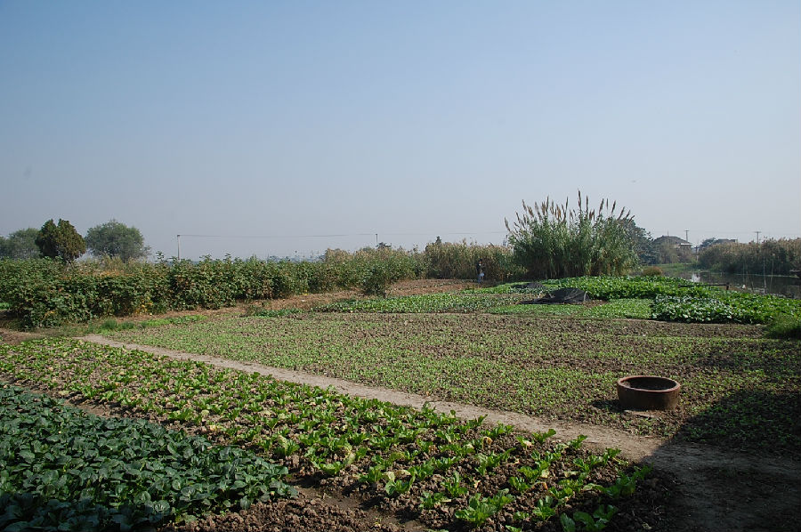
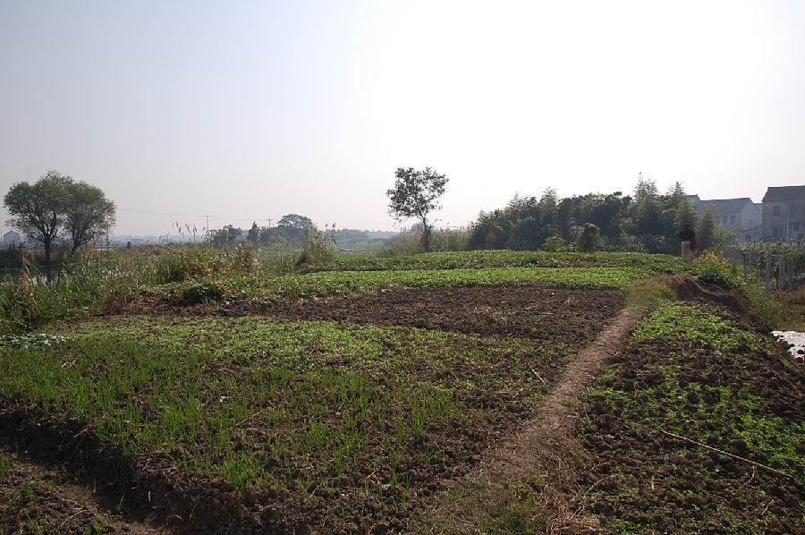

嘉兴市文物保护网 · 市级文物保护点 · 2020-11-02 · 原文


罗家甸遗址位于嘉兴市秀洲区油车港镇马厍村29组，原罗家甸自然村与五湾里自然村交界处，五湾里37号北侧，遗址南北狭长分布面积4100平方米，东北临南官荡，东南沿五湾里港，南至东张兜港，西为村级道路，沿河一侧基本被鱼塘中取土所掩埋，地势略有起伏高出地面约1米，属于新石器时代良渚文化遗址。1980年秋，南官荡围垦工程大规模开挖鱼塘，建设商品鱼基地，东张兜与南官荡连接处被开挖为鱼塘，挖土的绍兴民工发现陶罐三只，两只损坏，最小的一只被市博物馆收藏，后经鉴定为新石器时代良渚文化器物，此处定名为罗家甸遗址。现场已无明显文化层暴露，也未采集到相应陶片及其他器物。罗家甸遗址虽由于条件所限没有试掘，但其资料记录明确，地理位置特别典型，有待进一步研究确认，因而具有一定的历史价值。1992年公布为嘉兴市文物保护点。